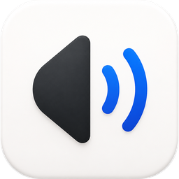
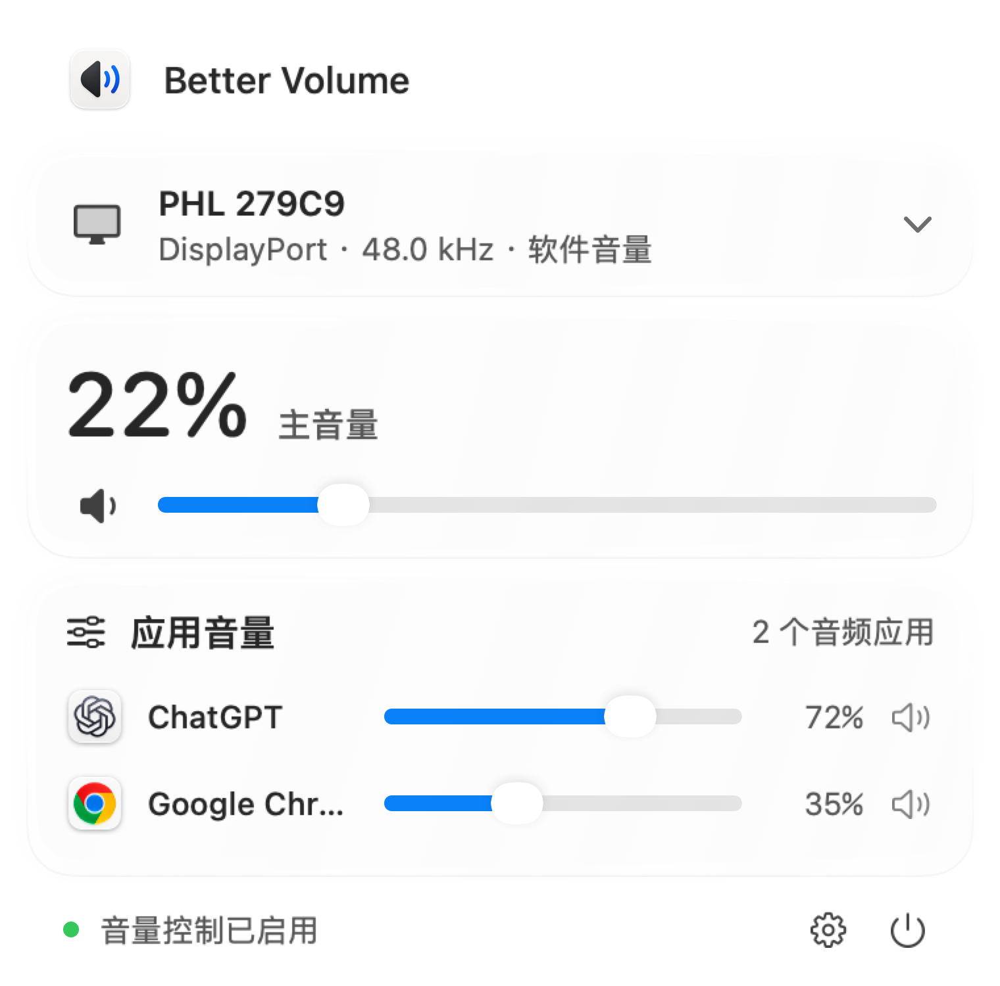
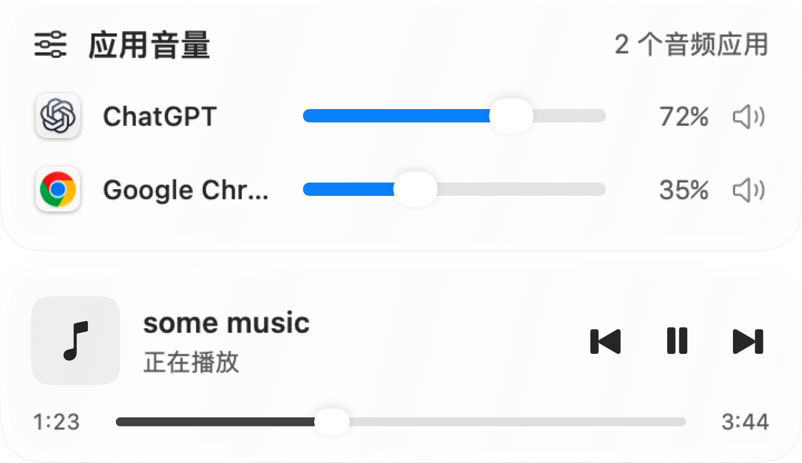
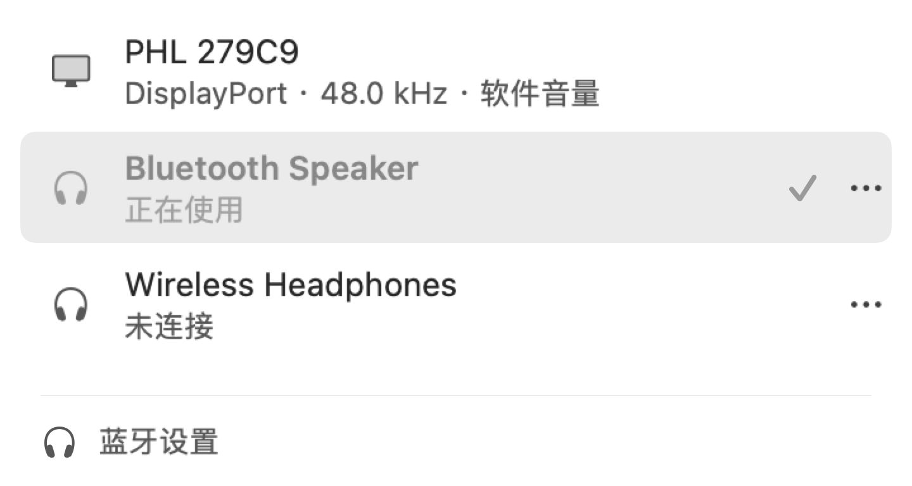

单独调节，单独静音
正在发声的应用会自动出现在面板里。音量分别保存，下次播放时不用重新设置。

Better VolumeBetter Volume，把应用音量和输出设备放进菜单栏。
音乐、视频、通话，各自调到合适的音量。
受 App Store 政策限制，商店版部分功能受限。推荐使用本站直接下载的官网版（即将开放）。
macOS 14.4 或更新版本



实际产品界面，使用示例应用与设备。播放控制的可用功能因应用和分发版本而异。
点开菜单栏，一次处理好。
正在发声的应用会自动出现在面板里。音量分别保存，下次播放时不用重新设置。
通过软件音量调节 HDMI 和 DisplayPort 输出。耳机、音箱和显示器，也可以在这里切换。
设置音量上限，以及切换设备时的安全音量。音频在本地实时处理，不保存录音。
还有其他问题？
联系我们
需要 macOS 14.4 或更高版本。请在商店页面查看最新的系统要求与版本信息。
可以。对于不提供原生音量调节的 HDMI 或 DisplayPort 输出，Better Volume 通过软件音量进行调节，需要授予系统音频录制权限。实际兼容性取决于设备与音频输出方式。
应用通过系统音频接口实时调整音量。音频仅在内存中处理，不保存录音文件。更多信息请查看隐私政策。
点击“获取应用”前往商店。基础应用音量可免费使用，部分进阶声音设置需要 Pro；具体价格与可用功能请以商店及应用内购买页面为准。
在菜单栏，调好每个应用的音量。